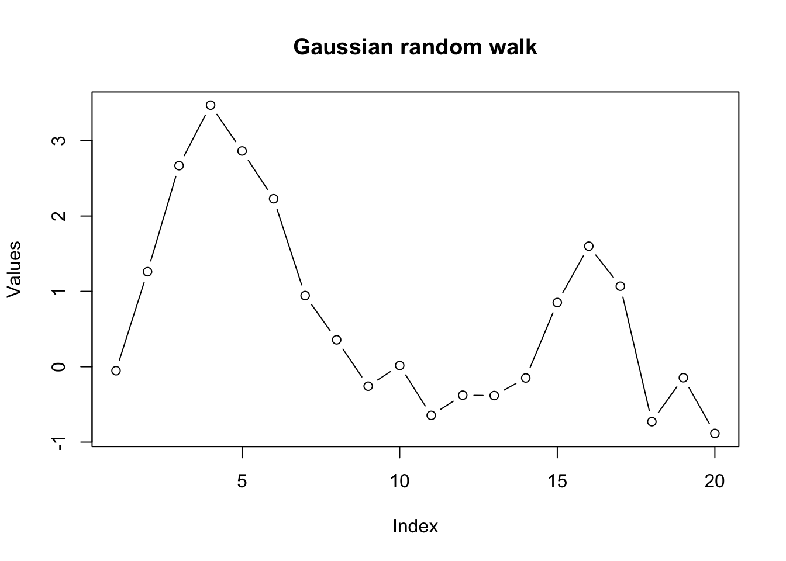
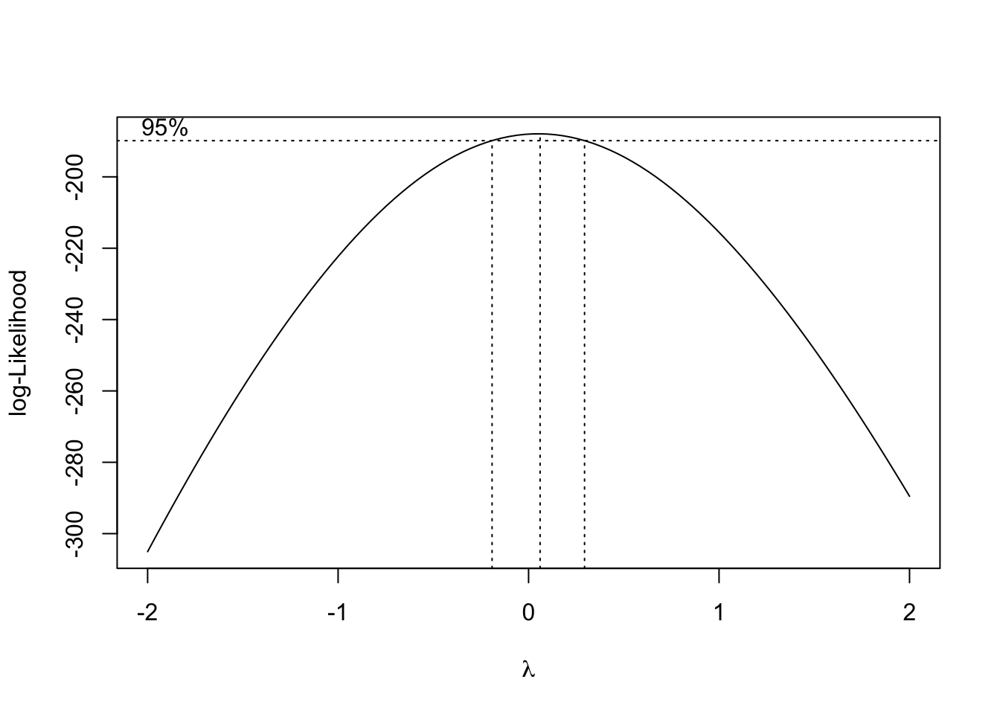
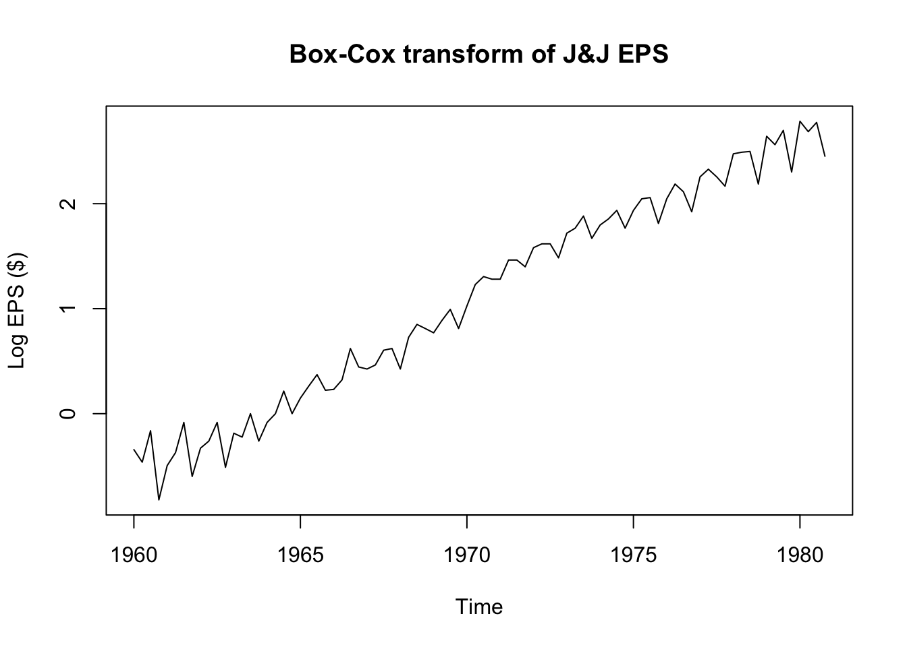
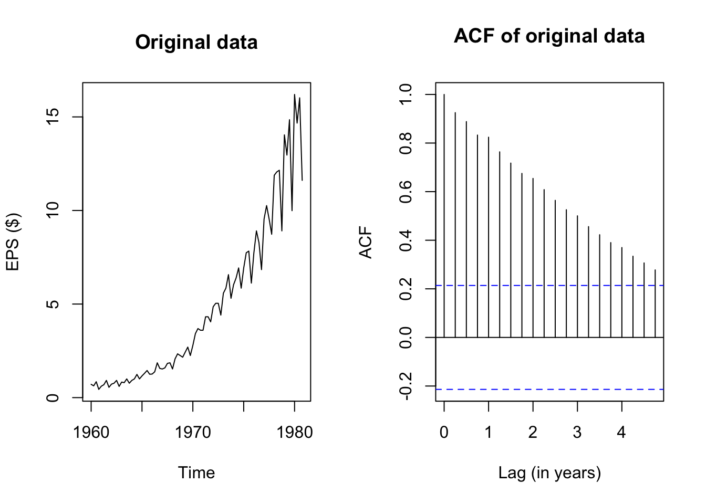
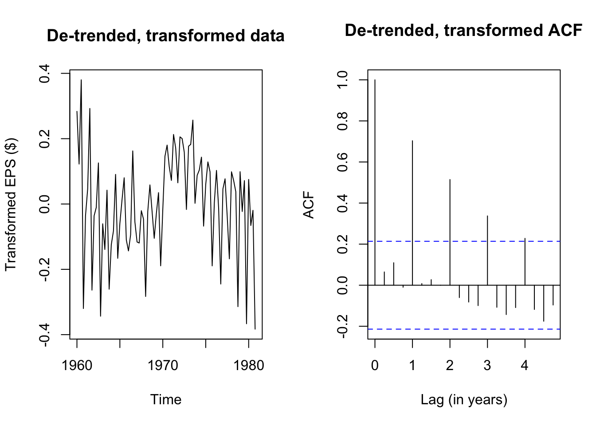
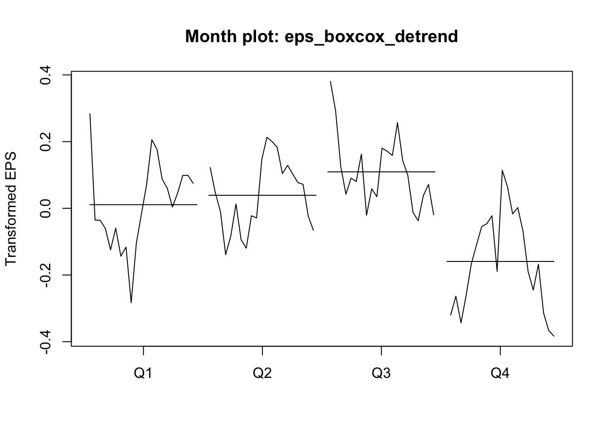

library(MASS)
library(tseries)
library(forecast)Time series basics in R
Time series functions used in this document
In the table below, packages with italicized names will need to be installed, while the package names in a standard font face can be found in most base R distributions (though they may need to be loaded into your workspace).
| Package | Function name | Purpose |
|---|---|---|
| stats | ts | Define a time series |
| stats | time | Extract the time indices of a ts |
| stats | start | Extract the first time index |
| stats | end | Extract the last time index |
| stats | window | Subset/downsample a time series |
| stats | arima.sim | Simulate ARIMA data (including random walks) |
| tseries | adf.test | ADF stationarity test |
| tseries | kpss.test | KPSS stationarity test |
| MASS | boxcox | Suggest Box-Cox parameter lambda |
| forecast | BoxCox | Transform data with known lambda |
| stats | acf | Compute and plot autocorrelation |
| stats | monthplot | Plot annual change across seasons |
| forecast | seasonplot | Plot seasonal change across years |
Creating and storing time series data
Different packages have different standards for defining a time series. In many cases, you can pass a simple numeric vector to a time series function: the function will typecast the vector into a time series object and proceed as intended. In other cases, you need to make sure that you have typed the vector as a time series.
Two common standards for representing time series are stats::ts from base R and tsibble::tsibble from the tidyverse constellation of packages. This document will use base R conventions and functions.
#define a time series
sample_ts <- ts(1:18, frequency=4, start=c(1999,2))
#print some basic information and the series values
print(sample_ts, calendar=FALSE)Time Series:
Start = c(1999, 2)
End = c(2003, 3)
Frequency = 4
[1] 1 2 3 4 5 6 7 8 9 10 11 12 13 14 15 16 17 18#alternate print view (still treated as a vector, not a matrix)
print(sample_ts, calendar=TRUE) Qtr1 Qtr2 Qtr3 Qtr4
1999 1 2 3
2000 4 5 6 7
2001 8 9 10 11
2002 12 13 14 15
2003 16 17 18 #recover the time index values for each obseration
time(sample_ts) Qtr1 Qtr2 Qtr3 Qtr4
1999 1999.25 1999.50 1999.75
2000 2000.00 2000.25 2000.50 2000.75
2001 2001.00 2001.25 2001.50 2001.75
2002 2002.00 2002.25 2002.50 2002.75
2003 2003.00 2003.25 2003.50 #recover the first and last time indices
start(sample_ts)[1] 1999 2end(sample_ts)[1] 2003 3#subset the series and optionally downsample to yearly
window(sample_ts,start=2000,end=2002) Qtr1 Qtr2 Qtr3 Qtr4
2000 4 5 6 7
2001 8 9 10 11
2002 12 window(sample_ts,start=2000,end=2002,frequency=1)Time Series:
Start = 2000
End = 2002
Frequency = 1
[1] 4 8 12Creating a random walk in R
Although random walks are defined recursively, “for loops” are almost always the wrong way to accomplish any task in R. Instead, we can rely on R’s native vectorization and parallelization to quickly create a one-dimensional gaussian random walk:
#simulate a gaussian random walk 'manually'
set.seed(1044)
rw_a <- cumsum(rnorm(20))
round(rw_a,2) [1] -0.05 1.26 2.67 3.47 2.86 2.23 0.94 0.36 -0.26 0.02 -0.65 -0.38
[13] -0.38 -0.15 0.85 1.60 1.07 -0.73 -0.15 -0.88plot(rw_a,type='b',ylab='Values',main='Gaussian random walk')
#simulate through a dedicated time series function
#note result is offset by one observation from above
set.seed(1044)
rw_b <- arima.sim(model=list(order=c(0,1,0)),n=20)
round(rw_b,2)Time Series:
Start = 0
End = 20
Frequency = 1
[1] 0.00 -0.05 1.26 2.67 3.47 2.86 2.23 0.94 0.36 -0.26 0.02 -0.65
[13] -0.38 -0.38 -0.15 0.85 1.60 1.07 -0.73 -0.15 -0.88#recover the white noise innovations (multiple options)
round(diff(rw_b),2)Time Series:
Start = 1
End = 20
Frequency = 1
[1] -0.05 1.31 1.41 0.80 -0.61 -0.63 -1.28 -0.59 -0.61 0.27 -0.66 0.27
[13] 0.00 0.23 1.00 0.75 -0.53 -1.80 0.58 -0.74set.seed(1044)
round(rnorm(20),2) [1] -0.05 1.31 1.41 0.80 -0.61 -0.63 -1.28 -0.59 -0.61 0.27 -0.66 0.27
[13] 0.00 0.23 1.00 0.75 -0.53 -1.80 0.58 -0.74Of course there are more random walks… we could create Gaussian random walks in two dimensions, or random walks with non-Gaussian innovations.
set.seed(1415)
rw_c <- apply(mvrnorm(n=20,mu=c(0,0),Sigma=diag(2)),2,cumsum)
plot(rw_c,type='b',pch=NA,xlab='Y (d1)',ylab='Y (d2)',main='2D random walk')
text(x=rw_c,labels=1:20)
Assessing stationarity
Let’s examine some real data. Johnson & Johnson (“J&J”) is a Fortune 500 company which focuses on medical technology and biotech products. Market analysts often describe the performance of publicly traded companies like J&J using the metric of earnings per share (EPS).
plot(JohnsonJohnson,ylab='EPS ($)',main='Quarterly EPS for Johnson & Johnson')
We see strong visual evidence that the series is not stationary: the mean changes over time and so does the variance. Because the variance changes, we can rule out trend-stationarity (and besides, we see that any trend would be non-linear.) Still, we can confirm this visual impression through two quick tests:1
adf.test(JohnsonJohnson)Warning in adf.test(JohnsonJohnson): p-value greater than printed p-value
Augmented Dickey-Fuller Test
data: JohnsonJohnson
Dickey-Fuller = 1.9321, Lag order = 4, p-value = 0.99
alternative hypothesis: stationarykpss.test(JohnsonJohnson,null='Trend')Warning in kpss.test(JohnsonJohnson, null = "Trend"): p-value smaller than
printed p-value
KPSS Test for Trend Stationarity
data: JohnsonJohnson
KPSS Trend = 0.50099, Truncation lag parameter = 3, p-value = 0.01Although the J&J EPS data is nonstationary, neither is it a true Gaussian random walk, since it it very steadily increases and the variance seems to increase over time. This is probably a good candidate for a Box-Cox transformation. Note that the MASS::boxcox function requires a model or formula as its input, and not the raw time series vector. We can create a simple “intercept only” model for the J&J EPS data.
boxcox(JohnsonJohnson~1)
The plot above shows the likelihood function associated with a stationarity test at different choices for the Box-Cox parameter \(\lambda\). It looks like the a range of values from about -0.2 to +0.2 would be acceptable, but since \(\lambda=0\) is so nearly the MLE choice, and since logarithmic transformations are common in econometric analyses, we may adopt \(\lambda=0\) for now, meaning that \(Y_t^{(\lambda)} = \log Y_t\).
plot(log(JohnsonJohnson),ylab='Log EPS ($)',main='Box-Cox transform of J&J EPS')
adf.test(log(JohnsonJohnson))
Augmented Dickey-Fuller Test
data: log(JohnsonJohnson)
Dickey-Fuller = -1.1543, Lag order = 4, p-value = 0.9087
alternative hypothesis: stationarykpss.test(log(JohnsonJohnson),null='Trend')Warning in kpss.test(log(JohnsonJohnson), null = "Trend"): p-value smaller than
printed p-value
KPSS Test for Trend Stationarity
data: log(JohnsonJohnson)
KPSS Trend = 0.25322, Truncation lag parameter = 3, p-value = 0.01What gives?! The Box-Cox transformed EPS data seem to be trend-stationary, but both the ADF test and the KPSS test confirm that the data are not yet stationary. To solve the riddle, we will need to examine the autocorrelation function.
Measuring and plotting autocorrelation
par(mfcol=c(1,2))
plot(JohnsonJohnson,main='Original data',ylab='EPS ($)')
acf(JohnsonJohnson,main='ACF of original data',xlab='Lag (in years)')
The plots above show the original J&J EPS data alongside a plot of the autocorrelation function, which pairs each lag \(k = 1, 2, \ldots,\) with the estimated autocorrelation \(\hat{\rho}_k = r_k\). Note that the autocorrelation of any series with itself is of course 1, and so the peak at \(k=0\) extends all the way to 1.
The remaining peaks show the autocorrelation of this EPS data with its own past values. Because the data have been structured with frequency 4 (appropriate for quarterly data), it takes four lags to reach “1” (year) on the x-axis, but I shall call each past quarter the first lag, second lag, etc. and ignore the x-axis values.
The autocorrelation function at the first lag is quite high too – visually about 0.92:
acf(JohnsonJohnson,plot=FALSE)$acf[1:5][1] 1.0000000 0.9251021 0.8882631 0.8328480 0.8240770(Okay, about 0.925.) The location of the current quarter’s EPS is highly correlated with the previous quarter’s EPS. Even though EPS is not a cumulated measure, this makes sense: the fortunes of huge companies do not often change overnight, and if a company is profitable in one quarter, it will likely be similarly profitable in the next quarter.
The autocorrelations with further lags are also quite high. We should expect this behavior: if this quarter’s EPS is highly correlated with last quarter’s EPS, then last quarter’s EPS is highly correlated with the EPS from two quarters ago, and so this quarter’s EPS is also at least moderately correlated with the EPS from two quarters ago!
Let’s try examining the ACF plot for the de-trended, Box-Cox transformed EPS data:
eps_boxcox_detrend <- ts(lm(log(JohnsonJohnson)~time(JohnsonJohnson))$residuals,
start=1960,frequency=4)
par(mfcol=c(1,2))
plot(eps_boxcox_detrend,main='De-trended, transformed data',ylab='Transformed EPS ($)')
acf(eps_boxcox_detrend,main='De-trended, transformed ACF',xlab='Lag (in years)')
The Box-Cox transformation and de-trending successfully removed a lot of the nonstationary behavior, but the remaining autocorrelation is highly seasonal — each transformed EPS observation is very similar to the EPS from four quarters ago (and thus eight, and twelve…). If we plot the quarterly earnings by year (or each year’s earnings by quarter), we can see this pattern more plainly, where Q3 usually brings very strong earnings for J&J, while Q4 brings weaker earnings:
monthplot(eps_boxcox_detrend,ylab='Transformed EPS',
main='Month plot: eps_boxcox_detrend')
seasonplot(eps_boxcox_detrend,year.labels.left=TRUE,type='l',ylab='Transformed EPS',
col=colorRampPalette(c('#ff0000','#bbbbbb','#0000ff'))(21))
We see now why the data failed our stationarity tests: the strong seasonal effects lead the mean of the serties to shift predictably in different quarters. If not every observation has the same predicted mean, then the data cannot be weakly stationary.
We will learn more elegant ways of modeling seasonality, but for now we could fall back on a tool we already know: linear regression. Rather than simply de-trending over time, we can add a linear time trend as well as quarterly effect dummies. The residuals from this OLS regression should be more stationary:
eps_boxcox_detrend_deseason <- ts(
lm(log(JohnsonJohnson) ~ time(JohnsonJohnson) + factor(cycle(JohnsonJohnson)))$residuals,
start=1960,frequency=4)
adf.test(eps_boxcox_detrend_deseason)
Augmented Dickey-Fuller Test
data: eps_boxcox_detrend_deseason
Dickey-Fuller = -1.1176, Lag order = 4, p-value = 0.9144
alternative hypothesis: stationarykpss.test(eps_boxcox_detrend_deseason,null='Trend')Warning in kpss.test(eps_boxcox_detrend_deseason, null = "Trend"): p-value
smaller than printed p-value
KPSS Test for Trend Stationarity
data: eps_boxcox_detrend_deseason
KPSS Trend = 0.25394, Truncation lag parameter = 3, p-value = 0.01par(mfrow=c(1,2))
plot(eps_boxcox_detrend_deseason,
main='De-trended, de-seasoned data',ylab='Transformed EPS ($)')
acf(eps_boxcox_detrend_deseason,
main='De-trended de-seasoned ACF',xlab='Lag (in years)')
Although the de-seasoned data are more stationary than ever, ADF and KPSS tests agree that the remaining stochastic signal is not yet fully stationary. We see from a simple plot of the series that there were good years (1960, the early 1970s) and bad years (the mid 1960s, 1980), patterns which were previously hidden from us.
Until we learn better tools, we will not be able to fully decompose this EPS series into a deterministic model and random error. However, even this stumbling block represents progress, because we are starting to see signal through the noise.
Note that both test outputs include an error message — because the p-values are interpolated from tables found in textbooks, and the test statistics for our data are outside of the table ranges, the ‘true’ p-value for the AFD test is more than 0.99 and the ‘true’ p-value for the KPSS test is less than 0.01. Nothing here has actually gone wrong.↩︎